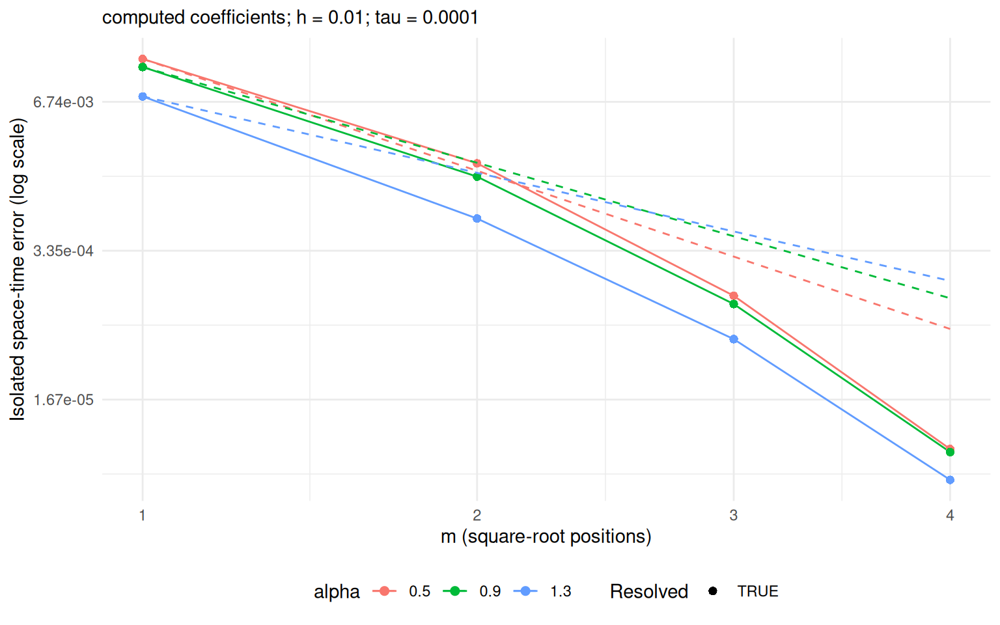
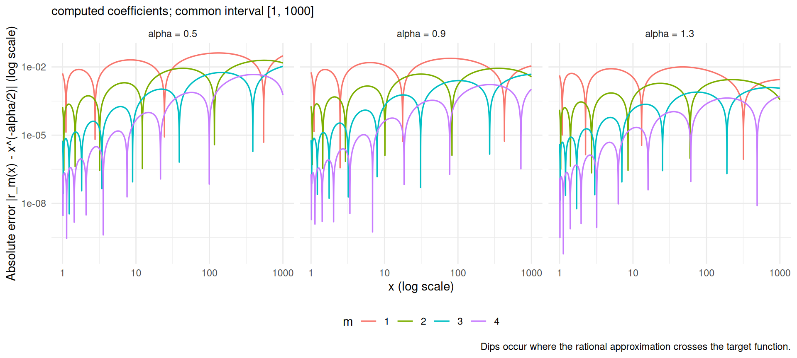
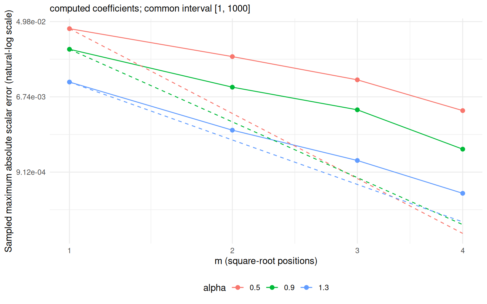
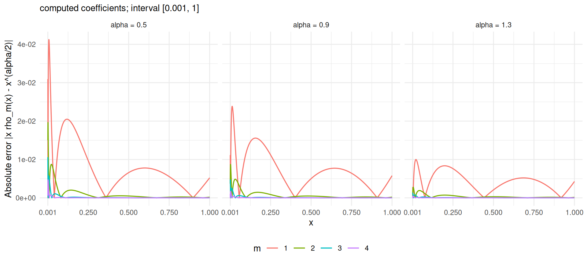
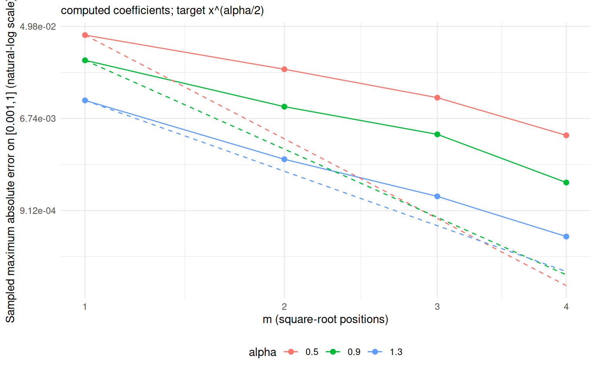
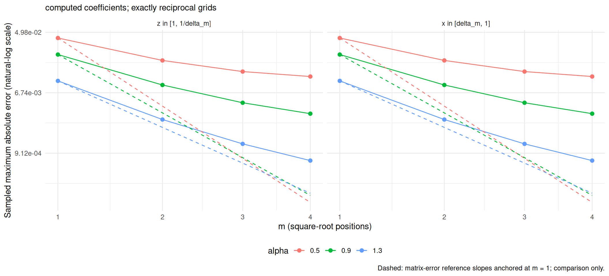

This notebook compares rational backward Euler with exact-discrete fractional backward Euler on the same assembled P1 FEM operator. It uses a complete numerical eigendecomposition of the matrices assembled by MetricGraph, without assuming that projected continuum modes are discrete eigenfunctions. Only the rational approximation differs between the two evolutions.
Edit this chunk, then run all chunks or click Knit. Results stay in memory and appear below. There are no run IDs, hashes, saved result files, or automatic refinement experiments. Knitting produces the usual HTML report.
h <- 0.01
tau <- 1e-4
m_max <- 4L
coefficient_source <- "computed" # "computed": m <= 8; "package": m <= 4
computed_coefficient_file <- here::here("matlab", "computed_fractional_roots.csv")
alpha_vector <- c(0.5, 0.9, 1.3)
T_final <- 1
kappa <- 4
diffusion <- 1The data are \(u_0=10e_5\) and \(f(t)=10\sin(\pi t)e_7\) on the tadpole with
edge lengths 1 and 2. diffusion multiplies the fractional
power. Computed coefficients require an exact stored \(\beta=\alpha/2\); the supplied CSV supports
\(\alpha=0.5,0.9,1.3\). Package roots
use linear interpolation. The integer case \(\alpha=2\) bypasses rational
approximation.
source(here::here("sourceifupdated.R"))
source_if_updated("fun/isolated_rational_convergence")knitr::opts_chunk$set(cache = FALSE, echo = TRUE, message = FALSE)
library(Matrix)
library(MetricGraph)
library(ggplot2)
# Load the helper Rmd without creating .R/.hash files in the project.
# helper_file <- tempfile(fileext = ".R")
# knitr::purl(here::here("fun", "isolated_rational_convergence.Rmd"),
# output = helper_file, quiet = TRUE)
# source(helper_file, local = TRUE)
# unlink(helper_file)
coefficient_source <- match.arg(coefficient_source, c("computed", "package"))
stopifnot(length(h) == 1L, is.finite(h), h > 0,
length(tau) == 1L, is.finite(tau), tau > 0,
length(T_final) == 1L, is.finite(T_final), T_final > 0,
length(kappa) == 1L, is.finite(kappa), kappa > 0,
length(diffusion) == 1L, is.finite(diffusion), diffusion > 0,
length(m_max) == 1L, is.finite(m_max), m_max >= 2,
m_max == floor(m_max), m_max <= max(rational_supported_orders(coefficient_source)),
length(alpha_vector) > 0, !anyDuplicated(alpha_vector),
all(is.finite(alpha_vector)), all(alpha_vector >= 0.5 & alpha_vector <= 2))
m_vector <- seq_len(m_max)
# Reject unsupported coefficients before assembling the eigensystem.
for (alpha in alpha_vector[alpha_vector != 2])
for (m in m_vector) my.get.roots(m, alpha / 2, coefficient_source = coefficient_source)
# Keep the requested tau exactly; require an integer number of steps.
N <- round(T_final / tau)
if (!is.finite(N) || N < 1 || N > 1e6 ||
abs(T_final / tau - N) > 64 * .Machine$double.eps * max(1, N))
stop("Choose T_final/tau to be an integer between 1 and 1e6.")
time_seq <- (0:N) * tau
# A complete eigensystem is dense: reject very fine meshes before assembly.
if (3 / h > 1200)
stop("Choose h >= 0.0025 for this complete-eigensystem notebook.")
data <- isolated_tadpole_data(h, kappa)
spectrum <- isolated_discrete_spectrum(data$C, data$L)
knitr::kable(data.frame(h_requested = h, h_min = data$h_min, h_max = data$h_max,
tau = tau, steps = N, dimension = nrow(data$C), source = coefficient_source))| h_requested | h_min | h_max | tau | steps | dimension | source |
|---|---|---|---|---|---|---|
| 0.01 | 0.01 | 0.01 | 1e-04 | 10000 | 300 | computed |
h is the mesh-builder target; the table reports the
actual element lengths. Every order uses exactly the same mesh and
tau. Dense eigendecomposition limits this notebook to
moderate meshes; this is not the analytic modal shortcut used in NAP’s
other convergence notebooks.
With \(L=\kappa^2C+G\), compute \(LV=CV\Lambda\) and \(V^\top CV=I\). The reference step is \[ U_h^{k+1}=V\operatorname{diag}\!\left( \frac{1}{1+\tau\nu\lambda_j^{\alpha/2}}\right) V^\top(CU_h^k+\tau F^{k+1}). \] The rational solution uses shifted sparse solves, with their factorizations reused at every time step. Both solutions use the same analytically integrated loads and interval-averaged forcing. We measure \[ E_m=\left[\tau\sum_{k=1}^{N} (U_h^k-U_{h,m}^k)^\top C(U_h^k-U_{h,m}^k)\right]^{1/2}. \] This is their exact common right-constant space-time reconstruction norm, apart from floating-point error. It isolates rational error, rather than measuring error against the continuum solution.
rows <- list()
for (alpha in alpha_vector) {
reference <- isolated_exact_be_reference(data$C, spectrum, data$initial,
data$spatial_load, time_seq, alpha, diffusion)
for (m in m_vector) {
rows[[length(rows) + 1L]] <- isolated_rational_error(
data, spectrum, reference, m, coefficient_source = coefficient_source)
}
}
results <- do.call(rbind, rows)
# Classical BE control: exact and sparse implementations should agree.
control_reference <- isolated_exact_be_reference(data$C, spectrum, data$initial,
data$spatial_load, time_seq, alpha = 2, diffusion = diffusion)
control <- isolated_rational_error(data, spectrum, control_reference, m = 1L,
coefficient_source = coefficient_source)
results$noise_indicator <- pmax(results$absolute_error_disagreement,
control$error, .Machine$double.xmin)
results$resolved <- results$product_error > 100 * results$noise_indicator
errors <- matrix(results$error, nrow = length(m_vector),
dimnames = list(m = m_vector, alpha = alpha_vector))
knitr::kable(errors, format.args = list(scientific = TRUE, digits = 5))| 0.5 | 0.9 | 1.3 |
|---|---|---|
| 1.5990e-02 | 1.3591e-02 | 7.5152e-03 |
| 1.9508e-03 | 1.4917e-03 | 6.4130e-04 |
| 1.3520e-04 | 1.1450e-04 | 5.6400e-05 |
| 6.2000e-06 | 5.8000e-06 | 3.3000e-06 |
Dashed lines show the benchmark exponent \(-2\pi\sqrt{1-\alpha/2}\), anchored at the first order; their heights are not proved bound constants. Open circles mark errors below an empirical numerical-resolution indicator. Those points should not be used to claim an asymptotic convergence rate.
plot_data <- results
plot_data$alpha_label <- factor(plot_data$alpha, levels = alpha_vector)
guides <- plot_data
for (alpha in alpha_vector) {
index <- which(guides$alpha == alpha)
guides$error[index] <- guides$error[index[1]] *
exp(-2 * pi * sqrt(1 - alpha / 2) * (sqrt(guides$m[index]) - 1))
}
p_m_isolated <- ggplot(plot_data, aes(sqrt(m), error, colour = alpha_label,
group = alpha_label)) +
geom_line() + geom_point(aes(shape = resolved), size = 2) +
geom_line(data = guides, linetype = "dashed") +
scale_shape_manual(values = c(`FALSE` = 1, `TRUE` = 16)) +
scale_x_continuous(breaks = sqrt(m_vector), labels = m_vector) +
scale_y_continuous(trans = scales::log_trans(base = exp(1)),
labels = scales::label_scientific()) +
labs(x = "m (square-root positions)", y = "Isolated space-time error (log scale)",
colour = "alpha", shape = "Resolved",
subtitle = sprintf("%s coefficients; h = %g; tau = %g", coefficient_source, h, tau)) +
theme_minimal() +
theme(legend.position = "bottom",
plot.background = element_rect(fill = "white", colour = NA))
p_m_isolated
fit_slope <- function(d) {
d <- d[is.finite(d$error) & d$error > 0, ]
if (nrow(d) < 2) return(NA_real_)
unname(coef(lm(log(error) ~ sqrt(m), data = d))[2])
}
slopes <- do.call(rbind, lapply(alpha_vector, function(a) {
d <- results[results$alpha == a, ]
data.frame(alpha = a, benchmark = -2*pi*sqrt(1-a/2),
all_orders_slope = fit_slope(d), resolved_orders = sum(d$resolved),
resolved_only_slope = fit_slope(d[d$resolved, ]))
}))
knitr::kable(slopes, digits = 5)| alpha | benchmark | all_orders_slope | resolved_orders | resolved_only_slope |
|---|---|---|---|---|
| 0.5 | -5.44140 | -7.76948 | 4 | -7.76948 |
| 0.9 | -4.65973 | -7.66275 | 4 | -7.66275 |
| 1.3 | -3.71718 | -7.62095 | 4 | -7.62095 |
product_error independently evolves the rational
solution in the complete numerical eigenbasis, evaluating the root
product directly. Its agreement with the sparse result checks the
implementation. The resolution indicator uses the larger of that
disagreement and the classical BE control error; it is a diagnostic, not
a certified error bound.
knitr::kable(spectrum$diagnostics, digits = 10)| dimension | eigenvalue_min | eigenvalue_max | relative_residual | C_orthogonality_error | estimated_dense_mib | elapsed_seconds |
|---|---|---|---|---|---|---|
| 300 | 16 | 120016 | 0 | 0 | 13.73291 | 0.192 |
knitr::kable(control[, c("error", "product_error", "final_state_gap_C")],
format.args = list(scientific = TRUE, digits = 5))| error | product_error | final_state_gap_C |
|---|---|---|
| 0e+00 | 0e+00 | 0e+00 |
knitr::kable(results[, c("alpha", "m", "error", "product_error",
"absolute_error_disagreement", "resolved")],
format.args = list(scientific = TRUE, digits = 5))| alpha | m | error | product_error | absolute_error_disagreement | resolved |
|---|---|---|---|---|---|
| 5.0e-01 | 1e+00 | 1.5990e-02 | 1.5990e-02 | 0e+00 | TRUE |
| 5.0e-01 | 2e+00 | 1.9508e-03 | 1.9508e-03 | 0e+00 | TRUE |
| 5.0e-01 | 3e+00 | 1.3520e-04 | 1.3520e-04 | 0e+00 | TRUE |
| 5.0e-01 | 4e+00 | 6.2000e-06 | 6.2000e-06 | 0e+00 | TRUE |
| 9.0e-01 | 1e+00 | 1.3591e-02 | 1.3591e-02 | 0e+00 | TRUE |
| 9.0e-01 | 2e+00 | 1.4917e-03 | 1.4917e-03 | 0e+00 | TRUE |
| 9.0e-01 | 3e+00 | 1.1450e-04 | 1.1450e-04 | 0e+00 | TRUE |
| 9.0e-01 | 4e+00 | 5.8000e-06 | 5.8000e-06 | 0e+00 | TRUE |
| 1.3e+00 | 1e+00 | 7.5152e-03 | 7.5152e-03 | 0e+00 | TRUE |
| 1.3e+00 | 2e+00 | 6.4130e-04 | 6.4130e-04 | 0e+00 | TRUE |
| 1.3e+00 | 3e+00 | 5.6400e-05 | 5.6400e-05 | 0e+00 | TRUE |
| 1.3e+00 | 4e+00 | 3.3000e-06 | 3.3000e-06 | 0e+00 | TRUE |
The scalar approximation bound transfers to a solution-error upper
bound through stability, provided it covers the discrete spectrum. These
measured solution curves need not equal the uniform scalar-error curves:
only discrete eigenvalues are evaluated, and the initial condition and
forcing weight their contributions. Changing h or
tau changes this finite-dimensional experiment.
This section uses coefficient_source for every
noninteger alpha in alpha_vector, with \(m=1,\ldots,\mathtt{m\_max}\), using the
same m_vector as the matrix-error plot. Write \(\beta=\alpha/2\). The stored roots define
\[
\rho_{m,\beta}(t)=\mathrm{factor}\,
\frac{\prod_{j=1}^{m}(t-r_{c,j})}
{\prod_{j=1}^{m+1}(t-r_{b,j})}
\approx t^{\beta-1}.
\] The inverse-power approximation used by the solver is
therefore \[
r_{m,\beta}(x)=\frac{\rho_{m,\beta}(1/x)}{x}
=\mathrm{factor}\,
\frac{\prod_{j=1}^{m}(1-r_{c,j}x)}
{\prod_{j=1}^{m+1}(1-r_{b,j}x)}
\approx x^{-\beta}.
\] We plot \(|r_{m,\beta}(x)-x^{-\beta}|\) on the common
interval \([1,10^3]\). This is
contained in every coefficient-generation interval \([1,10^{(5+m)/2}]\), so all orders are
compared on the same domain. These are scalar function errors; they are
independent of the mesh and time step. The integer case \(\alpha=2\) is omitted because the solver
evaluates it exactly without CSV coefficients.
scalar_m_vector <- m_vector
scalar_alpha_vector <- alpha_vector[alpha_vector != 2]
scalar_x_max <- 1e3
scalar_grid_points <- 10001L
scalar_x <- exp(seq(0, log(scalar_x_max), length.out = scalar_grid_points))
scalar_rows <- list()
for (scalar_alpha in scalar_alpha_vector) {
scalar_beta <- scalar_alpha / 2
for (scalar_m in scalar_m_vector) {
scalar_roots <- my.get.roots(scalar_m, scalar_beta,
coefficient_source = coefficient_source)
# Evaluate products in log form and avoid subtracting nearly equal values.
scalar_log_r <- log(scalar_roots$factor) +
rowSums(log1p(-outer(scalar_x, scalar_roots$pr_roots))) -
rowSums(log1p(-outer(scalar_x, scalar_roots$pl_roots)))
scalar_error <- abs(exp(-scalar_beta * log(scalar_x)) *
expm1(scalar_log_r + scalar_beta * log(scalar_x)))
stopifnot(all(is.finite(scalar_error)))
scalar_rows[[length(scalar_rows) + 1L]] <- data.frame(
alpha = scalar_alpha, m = scalar_m, x = scalar_x,
absolute_error = scalar_error)
}
}
scalar_errors <- if (length(scalar_rows)) do.call(rbind, scalar_rows) else NULL
if (!is.null(scalar_errors)) {
scalar_errors$alpha_label <- factor(scalar_errors$alpha,
levels = scalar_alpha_vector, labels = paste("alpha =", scalar_alpha_vector))
scalar_errors$m_label <- factor(scalar_errors$m, levels = scalar_m_vector)
scalar_max_errors <- aggregate(absolute_error ~ alpha + m, scalar_errors, max)
knitr::kable(scalar_max_errors,
col.names = c("alpha", "m", "Sampled maximum absolute error"),
format.args = list(scientific = TRUE, digits = 5))
}| alpha | m | Sampled maximum absolute error |
|---|---|---|
| 5.0e-01 | 1e+00 | 4.1242e-02 |
| 9.0e-01 | 1e+00 | 2.3856e-02 |
| 1.3e+00 | 1e+00 | 9.9846e-03 |
| 5.0e-01 | 2e+00 | 1.9635e-02 |
| 9.0e-01 | 2e+00 | 8.7114e-03 |
| 1.3e+00 | 2e+00 | 2.7778e-03 |
| 5.0e-01 | 3e+00 | 1.0590e-02 |
| 9.0e-01 | 3e+00 | 4.7740e-03 |
| 1.3e+00 | 3e+00 | 1.2413e-03 |
| 5.0e-01 | 4e+00 | 4.6741e-03 |
| 9.0e-01 | 4e+00 | 1.6778e-03 |
| 1.3e+00 | 4e+00 | 5.1880e-04 |
if (!is.null(scalar_errors)) {
p_scalar_error <- ggplot(scalar_errors,
aes(x, absolute_error, colour = m_label, group = m_label)) +
geom_line(linewidth = 0.6) +
facet_wrap(~ alpha_label, nrow = 1) +
scale_x_log10() +
scale_y_log10(labels = scales::label_scientific()) +
labs(x = "x (log scale)",
y = "Absolute error |r_m(x) - x^(-alpha/2)| (log scale)",
colour = "m", subtitle = sprintf("%s coefficients; common interval [1, 1000]",
coefficient_source),
caption = "Dips occur where the rational approximation crosses the target function.") +
theme_minimal() + theme(legend.position = "bottom")
print(p_scalar_error)
}
The maximum below is sampled on a logarithmic grid, including both endpoints; it is not a certified uniform error bound. For comparison with the matrix-error plot, the axes use the same \(\sqrt{m}\) positions and natural-log error scale. Dashed lines use the same benchmark exponent \(-2\pi\sqrt{1-\alpha/2}\), anchored at each scalar error at \(m=1\); they are reference slopes, not proved scalar-error bounds.
if (!is.null(scalar_errors)) {
scalar_max_errors$alpha_label <- factor(scalar_max_errors$alpha,
levels = scalar_alpha_vector)
scalar_guides <- scalar_max_errors
for (scalar_alpha in scalar_alpha_vector) {
scalar_index <- which(scalar_guides$alpha == scalar_alpha)
scalar_anchor <- scalar_index[scalar_guides$m[scalar_index] == 1L]
scalar_guides$absolute_error[scalar_index] <-
scalar_max_errors$absolute_error[scalar_anchor] *
exp(-2 * pi * sqrt(1 - scalar_alpha / 2) *
(sqrt(scalar_guides$m[scalar_index]) - 1))
}
p_scalar_error_m <- ggplot(scalar_max_errors,
aes(sqrt(m), absolute_error, colour = alpha_label, group = alpha_label)) +
geom_line() + geom_point(size = 2) +
geom_line(data = scalar_guides, linetype = "dashed") +
scale_x_continuous(breaks = sqrt(scalar_m_vector), labels = scalar_m_vector) +
scale_y_continuous(trans = scales::log_trans(base = exp(1)),
labels = scales::label_scientific()) +
labs(x = "m (square-root positions)",
y = "Sampled maximum absolute scalar error (natural-log scale)", colour = "alpha",
subtitle = sprintf("%s coefficients; common interval [1, 1000]", coefficient_source)) +
theme_minimal() +
theme(legend.position = "bottom",
plot.background = element_rect(fill = "white", colour = NA))
print(p_scalar_error_m)
}
On \([0.001,1]\) we compare the
bounded function \(x^\beta\), \(\beta=\alpha/2\), with the transformed
rational approximation \[
q_{m,\beta}(x)=x\rho_{m,\beta}(x)
=x\,\mathrm{factor}\,
\frac{\prod_{j=1}^{m}(x-r_{c,j})}
{\prod_{j=1}^{m+1}(x-r_{b,j})}.
\] These plots use coefficient_source and all
noninteger values in alpha_vector, with orders from
m_vector. The grid is the exact reciprocal of the preceding
scalar plot’s grid on \([1,1000]\).
Their sampled maximum errors therefore agree up to roundoff.
unit_m_vector <- m_vector
unit_alpha_vector <- alpha_vector[alpha_vector != 2]
unit_x <- sort(1 / scalar_x)
unit_rows <- list()
for (unit_alpha in unit_alpha_vector) {
unit_beta <- unit_alpha / 2
for (unit_m in unit_m_vector) {
unit_roots <- my.get.roots(unit_m, unit_beta,
coefficient_source = coefficient_source)
unit_log_rho <- log(unit_roots$factor) +
rowSums(log(outer(unit_x, -unit_roots$pr_roots, "+"))) -
rowSums(log(outer(unit_x, -unit_roots$pl_roots, "+")))
unit_log_x <- log(unit_x)
unit_error <- abs(exp(unit_beta * unit_log_x) *
expm1(unit_log_rho + (1 - unit_beta) * unit_log_x))
stopifnot(all(is.finite(unit_error)))
unit_rows[[length(unit_rows) + 1L]] <- data.frame(
alpha = unit_alpha, m = unit_m, x = unit_x, absolute_error = unit_error)
}
}
unit_errors <- if (length(unit_rows)) do.call(rbind, unit_rows) else NULL
if (!is.null(unit_errors)) {
unit_errors$alpha_label <- factor(unit_errors$alpha, levels = unit_alpha_vector,
labels = paste("alpha =", unit_alpha_vector))
unit_errors$m_label <- factor(unit_errors$m, levels = unit_m_vector)
unit_max_errors <- aggregate(absolute_error ~ alpha + m, unit_errors, max)
knitr::kable(unit_max_errors,
col.names = c("alpha", "m", "Sampled maximum absolute error on [0.001,1]"),
format.args = list(scientific = TRUE, digits = 5))
}| alpha | m | Sampled maximum absolute error on [0.001,1] |
|---|---|---|
| 5.0e-01 | 1e+00 | 4.1242e-02 |
| 9.0e-01 | 1e+00 | 2.3856e-02 |
| 1.3e+00 | 1e+00 | 9.9846e-03 |
| 5.0e-01 | 2e+00 | 1.9635e-02 |
| 9.0e-01 | 2e+00 | 8.7114e-03 |
| 1.3e+00 | 2e+00 | 2.7778e-03 |
| 5.0e-01 | 3e+00 | 1.0590e-02 |
| 9.0e-01 | 3e+00 | 4.7740e-03 |
| 1.3e+00 | 3e+00 | 1.2413e-03 |
| 5.0e-01 | 4e+00 | 4.6741e-03 |
| 9.0e-01 | 4e+00 | 1.6778e-03 |
| 1.3e+00 | 4e+00 | 5.1880e-04 |
if (!is.null(unit_errors)) {
p_unit_error <- ggplot(unit_errors,
aes(x, absolute_error, colour = m_label, group = m_label)) +
geom_line(linewidth = 0.6) +
facet_wrap(~ alpha_label, nrow = 1) +
scale_x_continuous(limits = c(0.001, 1), breaks = c(0.001, 0.25, 0.5, 0.75, 1)) +
scale_y_continuous(labels = scales::label_scientific()) +
labs(x = "x", y = "Absolute error |x rho_m(x) - x^(alpha/2)|",
colour = "m",
subtitle = sprintf("%s coefficients; interval [0.001, 1]", coefficient_source)) +
theme_minimal() +
theme(legend.position = "bottom",
plot.background = element_rect(fill = "white", colour = NA))
print(p_unit_error)
}
For comparison with the matrix-error plot, the convergence plot uses \(\sqrt{m}\) positions and a natural-log error scale, with the same reference exponent \(-2\pi\sqrt{1-\alpha/2}\) anchored at \(m=1\). These dashed lines are comparison slopes, not proved bounds for \(|q_{m,\beta}(x)-x^\beta|\). The maxima are sampled, not certified uniform bounds.
if (!is.null(unit_errors)) {
unit_max_errors$alpha_label <- factor(unit_max_errors$alpha,
levels = unit_alpha_vector)
unit_guides <- unit_max_errors
for (unit_alpha in unit_alpha_vector) {
unit_index <- which(unit_guides$alpha == unit_alpha)
unit_anchor <- unit_index[unit_guides$m[unit_index] == 1L]
unit_guides$absolute_error[unit_index] <-
unit_max_errors$absolute_error[unit_anchor] *
exp(-2 * pi * sqrt(1 - unit_alpha / 2) *
(sqrt(unit_guides$m[unit_index]) - 1))
}
p_unit_error_m <- ggplot(unit_max_errors,
aes(sqrt(m), absolute_error, colour = alpha_label, group = alpha_label)) +
geom_line() + geom_point(size = 2) +
geom_line(data = unit_guides, linetype = "dashed") +
scale_x_continuous(breaks = sqrt(unit_m_vector), labels = unit_m_vector) +
scale_y_continuous(trans = scales::log_trans(base = exp(1)),
labels = scales::label_scientific()) +
labs(x = "m (square-root positions)",
y = "Sampled maximum absolute error on [0.001,1] (natural-log scale)",
colour = "alpha",
subtitle = sprintf("%s coefficients; target x^(alpha/2)", coefficient_source)) +
theme_minimal() +
theme(legend.position = "bottom",
plot.background = element_rect(fill = "white", colour = NA))
print(p_unit_error_m)
}
The two preceding convergence plots measure errors on the exactly reciprocal fixed intervals \([1,1000]\) and \([0.001,1]\). The following comparison also allows order-dependent intervals, as in the thesis example.
For \(z=1/x\) the approximations
satisfy the exact identity \[
q_{m,\beta}(x)=x\rho_{m,\beta}(x)=r_{m,\beta}(1/x),
\qquad
|q_{m,\beta}(x)-x^\beta|
=|r_{m,\beta}(z)-z^{-\beta}|.
\] Consequently, \[
\sup_{z\in[1,1/\delta_m]}|r_{m,\beta}(z)-z^{-\beta}|
=\sup_{x\in[\delta_m,1]}|q_{m,\beta}(x)-x^\beta|.
\] The comparison below uses the thesis convention \(\delta_m=10^{-(5+m)/2}\) by default. Set
reciprocal_domain to "common" to compare the
earlier fixed intervals \([1,1000]\)
and \([0.001,1]\) instead. Both errors
are evaluated independently on exactly reciprocal grids, so their
sampled maxima should agree up to roundoff. No Jacobian is needed for
this supremum norm.
The thesis example uses BRASIL partial-fraction coefficients with
orders up to 14 and ten uniformly spaced samples in each interval. Here
we retain the selected root tables, orders from m_vector,
and dense logarithmic sampling. Reciprocity gives equality within either
coefficient family; it does not require their convergence rates to
coincide.
reciprocal_domain <- "order-dependent" # "common" uses [1,1000] and [0.001,1].
reciprocal_domain <- match.arg(reciprocal_domain, c("order-dependent", "common"))
reciprocal_rows <- list()
for (reciprocal_alpha in alpha_vector[alpha_vector != 2]) {
reciprocal_beta <- reciprocal_alpha / 2
for (reciprocal_m in m_vector) {
reciprocal_delta <- if (reciprocal_domain == "order-dependent")
10^(-(5 + reciprocal_m) / 2) else 1e-3
reciprocal_z <- exp(seq(0, log(1 / reciprocal_delta), length.out = 20001L))
reciprocal_x <- 1 / reciprocal_z
reciprocal_roots <- my.get.roots(reciprocal_m, reciprocal_beta,
coefficient_source = coefficient_source)
reciprocal_log_r <- log(reciprocal_roots$factor) +
rowSums(log1p(-outer(reciprocal_z, reciprocal_roots$pr_roots))) -
rowSums(log1p(-outer(reciprocal_z, reciprocal_roots$pl_roots)))
reciprocal_log_rho <- log(reciprocal_roots$factor) +
rowSums(log(outer(reciprocal_x, -reciprocal_roots$pr_roots, "+"))) -
rowSums(log(outer(reciprocal_x, -reciprocal_roots$pl_roots, "+")))
reciprocal_large_error <- abs(reciprocal_z^(-reciprocal_beta) *
expm1(reciprocal_log_r + reciprocal_beta * log(reciprocal_z)))
reciprocal_unit_error <- abs(reciprocal_x^reciprocal_beta *
expm1(reciprocal_log_rho + (1 - reciprocal_beta) * log(reciprocal_x)))
reciprocal_gap <- max(abs(reciprocal_large_error - reciprocal_unit_error))
stopifnot(all(is.finite(c(reciprocal_large_error, reciprocal_unit_error))),
reciprocal_gap <= 1e-12)
reciprocal_rows[[length(reciprocal_rows) + 1L]] <- data.frame(
alpha = reciprocal_alpha, m = reciprocal_m, delta = reciprocal_delta,
large_interval_error = max(reciprocal_large_error),
reciprocal_interval_error = max(reciprocal_unit_error),
max_pointwise_disagreement = reciprocal_gap)
}
}
reciprocal_checks <- if (length(reciprocal_rows)) do.call(rbind, reciprocal_rows) else NULL
if (!is.null(reciprocal_checks)) {
knitr::kable(reciprocal_checks,
format.args = list(scientific = TRUE, digits = 5))
reciprocal_labels <- if (reciprocal_domain == "order-dependent")
c("z in [1, 1/delta_m]", "x in [delta_m, 1]") else
c("z in [1, 1000]", "x in [0.001, 1]")
reciprocal_plot_data <- rbind(
data.frame(alpha = reciprocal_checks$alpha, m = reciprocal_checks$m,
error = reciprocal_checks$large_interval_error, domain = reciprocal_labels[1]),
data.frame(alpha = reciprocal_checks$alpha, m = reciprocal_checks$m,
error = reciprocal_checks$reciprocal_interval_error, domain = reciprocal_labels[2]))
reciprocal_plot_data$alpha_label <- factor(reciprocal_plot_data$alpha,
levels = alpha_vector[alpha_vector != 2])
reciprocal_plot_data$domain <- factor(reciprocal_plot_data$domain,
levels = reciprocal_labels)
reciprocal_guides <- reciprocal_plot_data
for (reciprocal_alpha in alpha_vector[alpha_vector != 2]) {
reciprocal_index <- which(reciprocal_guides$alpha == reciprocal_alpha)
reciprocal_anchor <- reciprocal_checks$large_interval_error[
reciprocal_checks$alpha == reciprocal_alpha & reciprocal_checks$m == 1L]
reciprocal_guides$error[reciprocal_index] <- reciprocal_anchor *
exp(-2 * pi * sqrt(1 - reciprocal_alpha / 2) *
(sqrt(reciprocal_guides$m[reciprocal_index]) - 1))
}
}if (!is.null(reciprocal_checks)) {
p_reciprocal_error_m <- ggplot(reciprocal_plot_data,
aes(sqrt(m), error, colour = alpha_label, group = alpha_label)) +
geom_line() + geom_point(size = 2) +
geom_line(data = reciprocal_guides, linetype = "dashed") +
facet_wrap(~ domain, nrow = 1) +
scale_x_continuous(breaks = sqrt(m_vector), labels = m_vector) +
scale_y_continuous(trans = scales::log_trans(base = exp(1)),
labels = scales::label_scientific()) +
labs(x = "m (square-root positions)",
y = "Sampled maximum absolute error (natural-log scale)", colour = "alpha",
subtitle = sprintf("%s coefficients; exactly reciprocal grids", coefficient_source),
caption = "Dashed: matrix-error reference slopes anchored at m = 1; comparison only.") +
theme_minimal() +
theme(legend.position = "bottom",
plot.background = element_rect(fill = "white", colour = NA))
print(p_reciprocal_error_m)
}